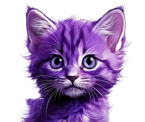

Apresentação do Projeto
A ONG "Projeto Pacotinho de Amor" foi criada com o propósito de resgatar e promover a adoção de animais abandonados, como cães e gatos, na cidade de São Paulo. Ela se destaca pela dedicação ao cuidado dos animais, fornecendo castração, vacinação e vermifugação antes de disponibilizá-los para adoção. O projeto organiza eventos de adoção em locais como o Tietê Plaza Shopping e segue rigorosos critérios de seleção para garantir que os animais sejam adotados por famílias preparadas para cuidar deles.
Nossa História
O projeto começou há quase 4 anos atrás, a grande força foi originada de protetores independentes que se juntavam para fazer a diferença na vida dos animais. Desde o início os resgates eram realizados, e pagavamos os lares temporários para hospedar enquanto preparavamos os animais para castração, vacinação e doação.
Como Funciona
Para adotar, os interessados devem ter mais de 21 anos, apresentar documentos como RG e comprovante de residência, e passar por uma entrevista para garantir que estão aptos a cuidar do pet. Além disso, é cobrada uma taxa de adoção de R$100, que ajuda a cobrir os custos com vacinas, vermífugos e outros cuidados com os animais. O processo de adoção é transparente e exige o preenchimento de questionários, envio de fotos e vídeos do ambiente onde o animal viverá, garantindo um lar seguro e amoroso.
Para mais informações ou para participar de uma feira de adoção, você pode entrar em contato com o projeto através do Instagram (@projeto.pacotinhodeamor)
Fundadores
Atualmente as principais voluntárias são: Barbara Martins, responsável pelas divulgações, captação de feiras, vendas das rifas, recolhimento de doações e acompanhamento dos adotados e Leda Prado, responsável por finalizar as entrevistas, resgatar, interface com lar temporário, captação de castracoes etc.
Todos que contribuem com o projeto são imprescindíveis para ele existir.